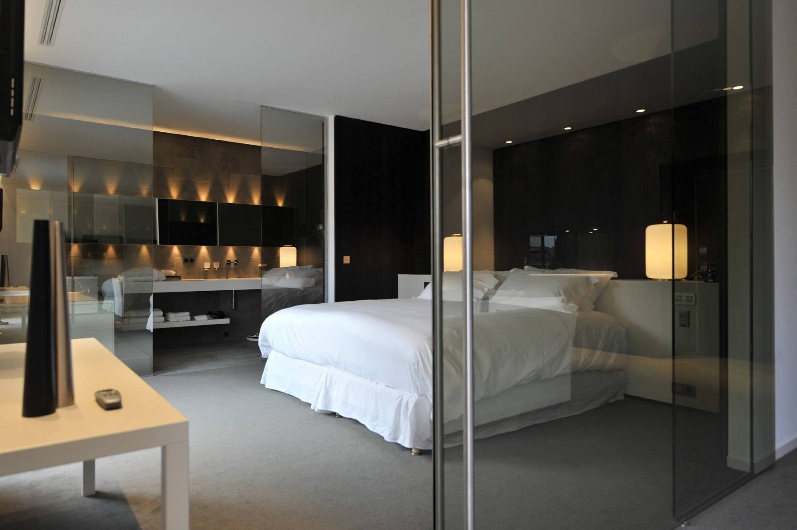
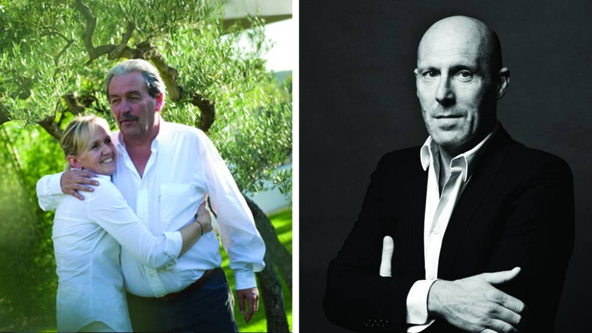
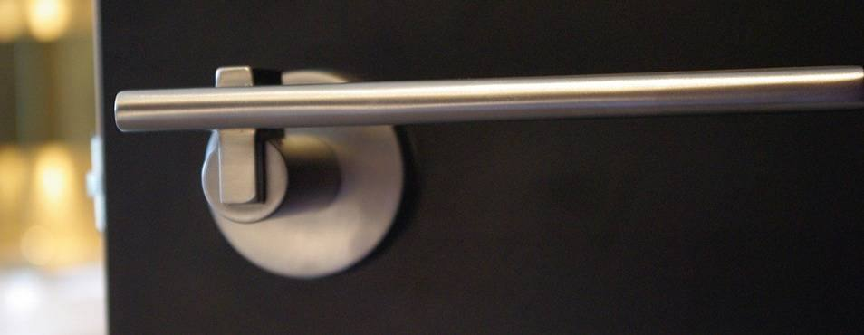
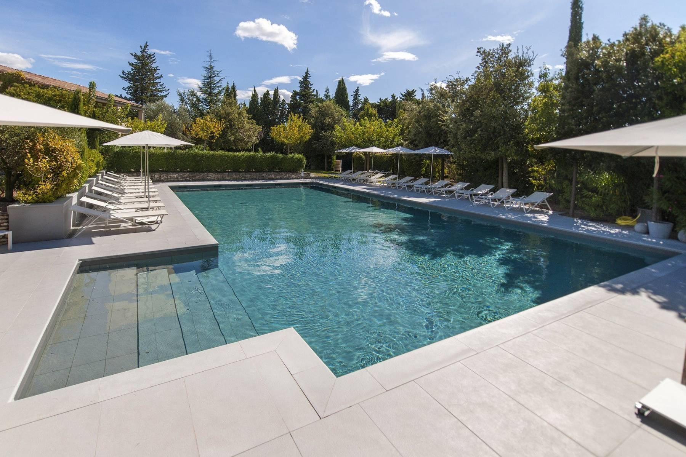
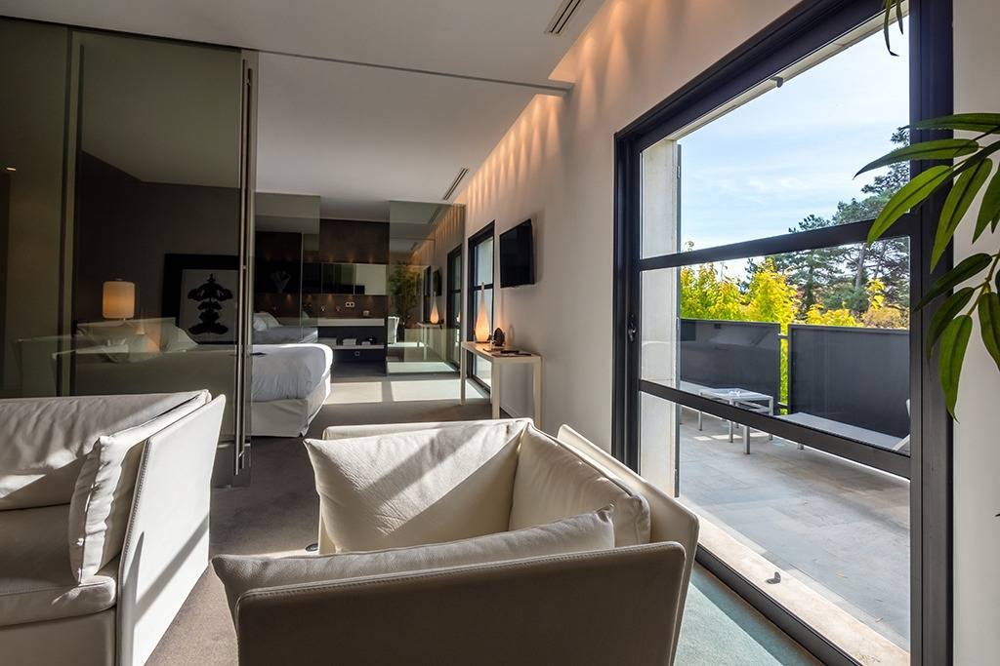
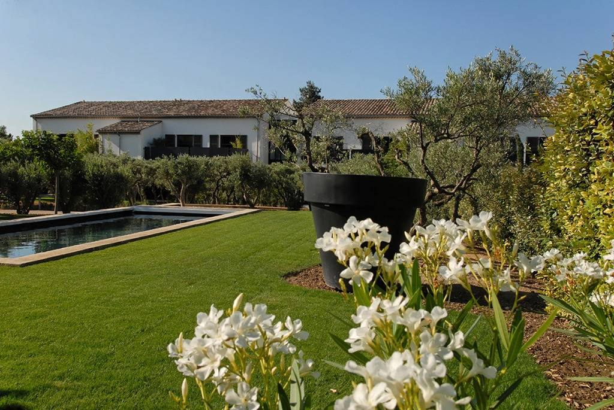
Nancy Bourguignon
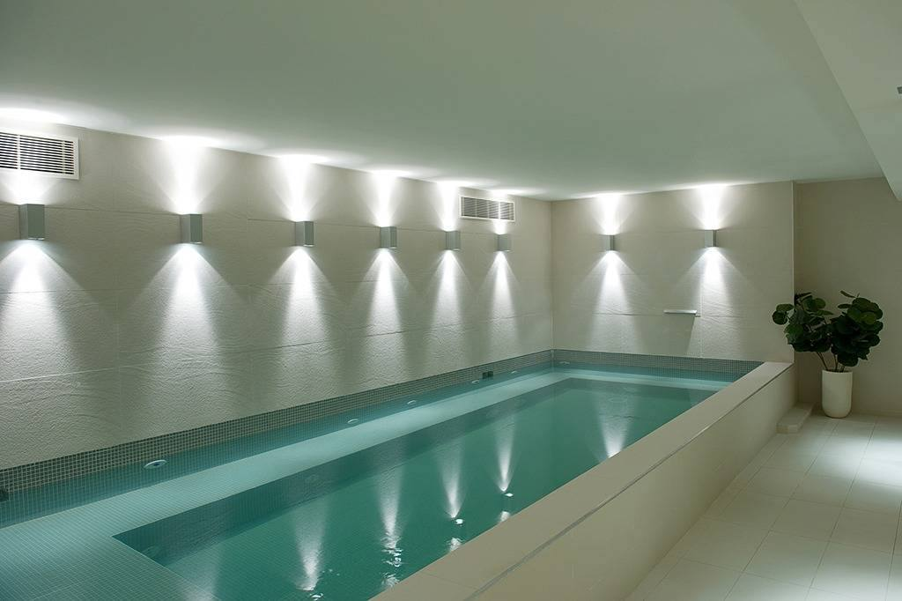
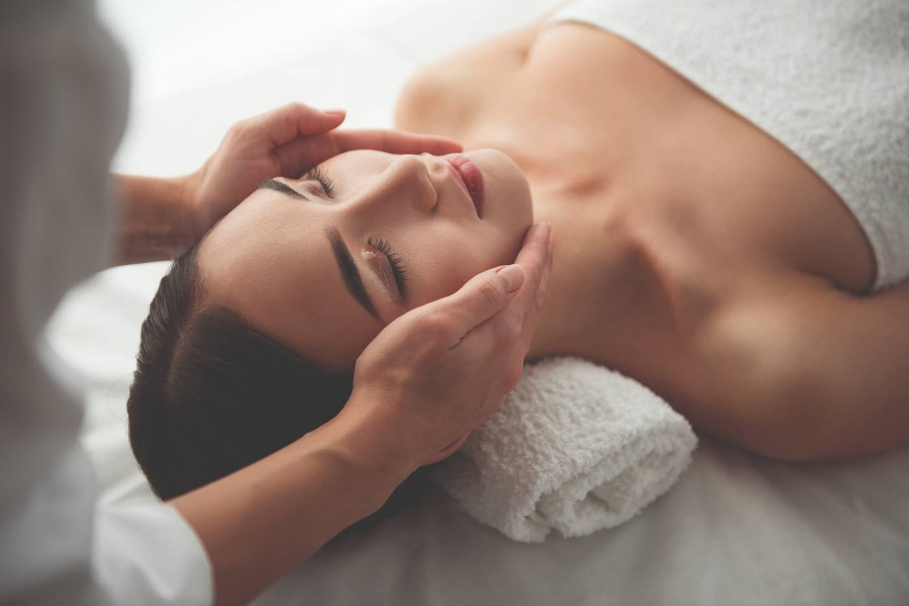
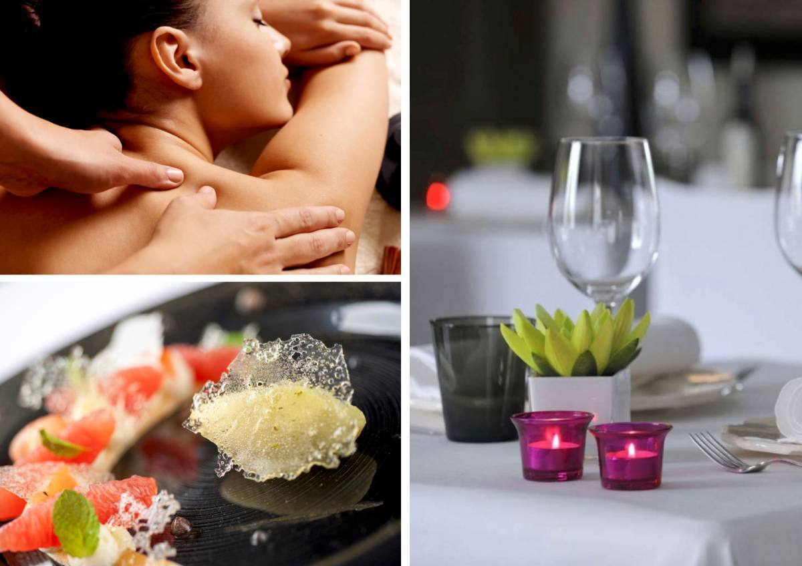
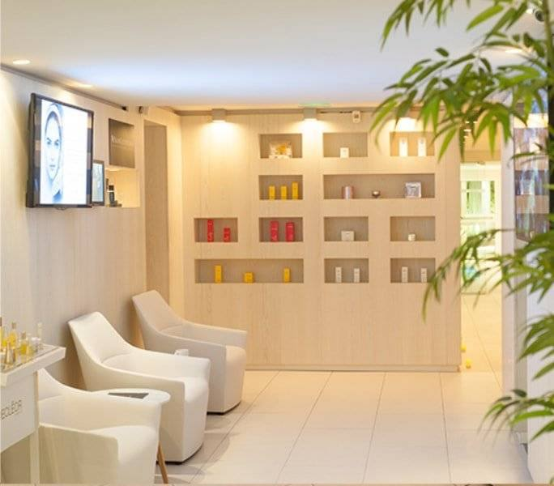
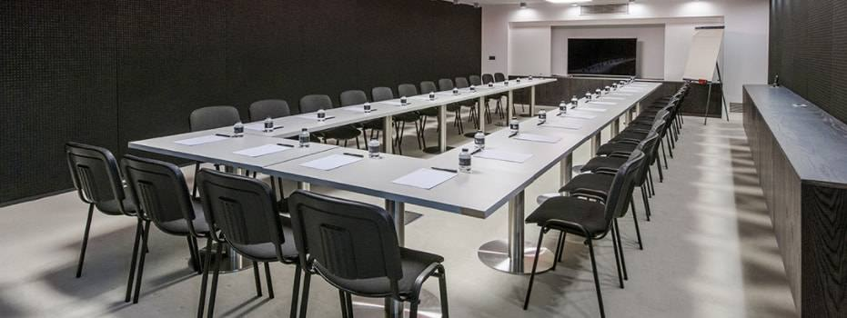
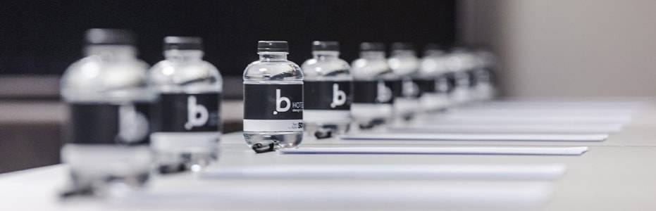
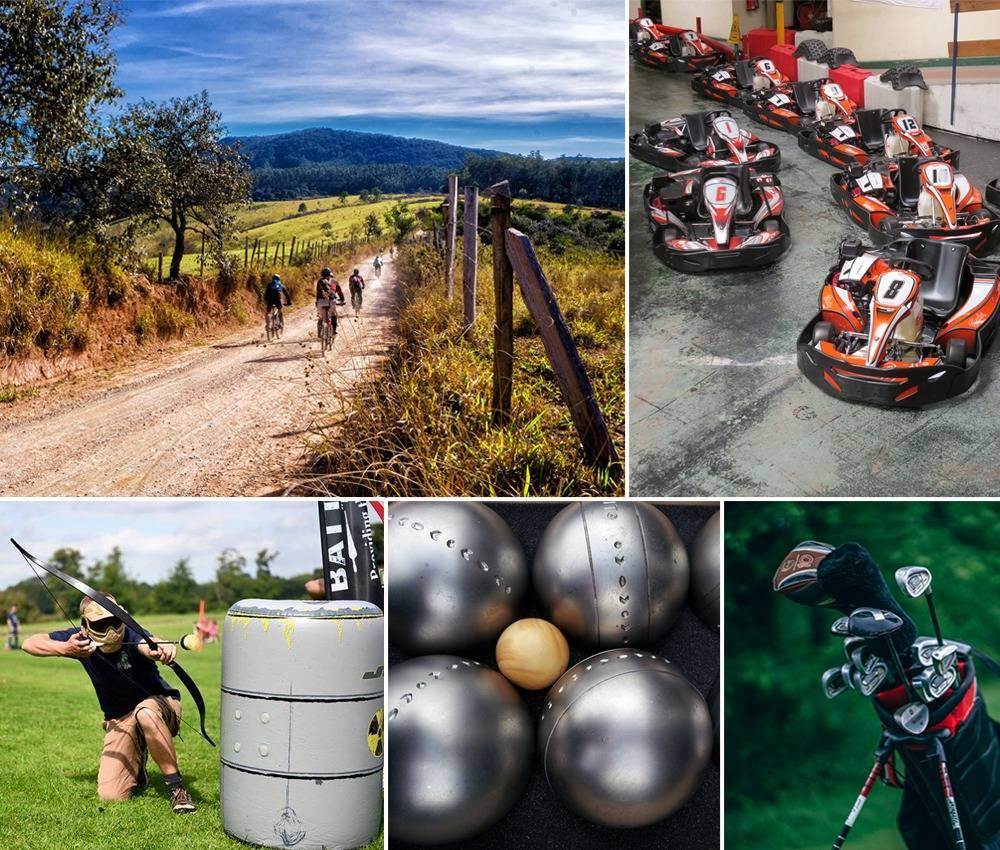
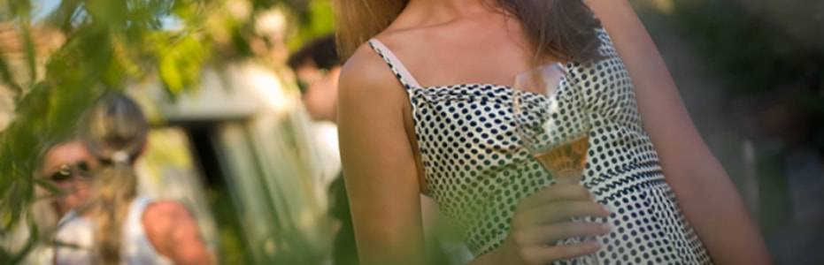
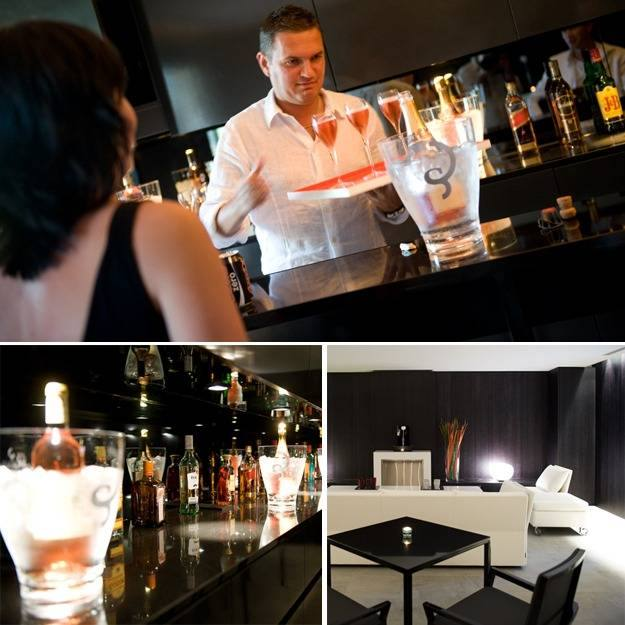
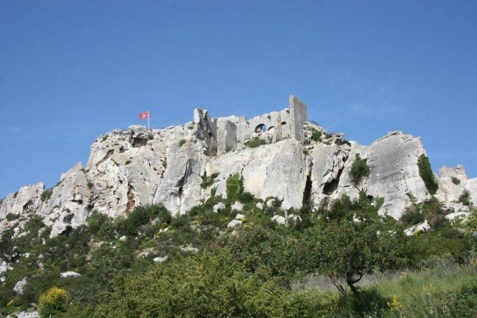
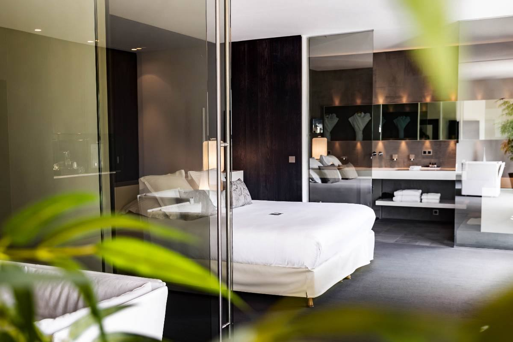
1 chemin de l’Ancienne Voie Ferrée
13520 Paradou
+33 4 90 54 56 78
reservation@hotelbdesign.fr
43.7179705, 4.7839781
Bourguignon Provence SARL, Drakkar Communication, Pixabay, Adobe Stock, M. François Moura, Mme Laura Soulages.